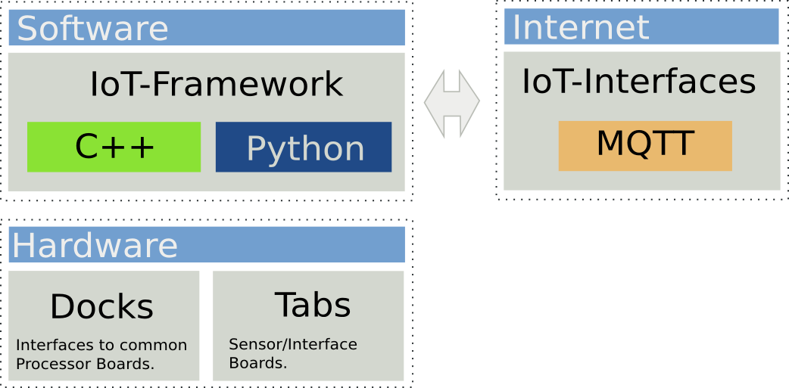
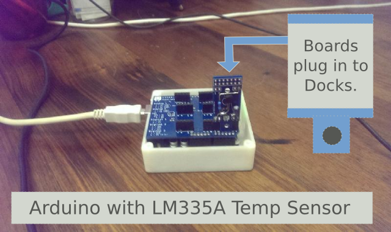

About
clixx.io is a system for building Internet-of-Things computing systems. It features innovative hardware and software that take's out many of the frustrations out of building these things. The result is that instead of projects taking days or perhaps weeks, many systems can be built in minutes or hours.
We make the Internet-of-Things easy
Need an Internet Temperature sensor, controller, button or other Device? Want to make that talk over the Internet ?
We make a range of simple devices that just connect to the Internet and allow you to control devices over long distances.
Here is our system Architecture:
Hardware that's really easy to assemble.
clixx.io uses a combination of Docks and Tabs which allow you to easily plug together boards without having to work out the wiring needed every time.
There's a basic pattern that's used for all boards and this means that all boards share similar connectors even though they might do different functions.
Supports Arduino, Raspberry-Pi, and other Embedded Platforms
clixx.io is a set of peripherals that will support all the common embedded platforms of today and allow you to easily share boards from one system to the other.
Tough to Deploy in the real-world
Many experimentors are dissapointed to find that what they work out on the breadboard has to be redone to actually deploy in a real-world environment.
Not only is clixx.io great for project experimentation and prototyping but it's really quick to deploy to the field.
clixx.io is built to be instantly deployable to field/commercial applications and can be locked down tightly. All boards feature big bolt-holes so that systems that are deployed can accept higher than Industry averages for vibration and knocks.
So whilst clixx.io may look like designer electronics it's tough and designed to withstand real world deployment.